What I’m Practicing — Summer 2022 Edition
Posted on July 18, 2022
I reckon one of the most important things an artist can do is inspire other artists, so in that vein, here’s a quick look at some of the licks I’ve been woodshedding as of late. I realize that I don’t often talk about my own playing, so maybe you’ll find a cheeky idea in here that you haven’t yet cooked up yourself.
There’s a good chance I’ll make more of these posts sometime in the future. It might be the distant future — it just depends on where my drumming takes me. So, without further ado… bombs away.
RLK, Nonuplet Style
I used to call these “Bonham Triplets”, but I can’t do that anymore because life is cruel and drummers are dumb.
Sorry, I don’t mean to call anyone out here, since there’s no one specific person responsible for the general buffoonery of the drumming populous. Anyhoo, most people would play the RLK lick as triplets. That’s the easy answer, but at certain tempos, triplets will not work (e.g. when 8th note triplets are too slow to be exciting, while 16th triplets are too fast to play).
Enter the nonuplet. Much like the quintuplet and my five–a–diddle (RLRRL), I often use the nonuplet to create familiar–sounding licks at speeds that are more playable for the given song. One of my favorite gimmicks is to play “six stroke rolls” as nonuplets (I’m talking about six stroke rolls that aren’t true rudimental six stroke rolls). Note how the accent pattern follows the half note triplet:
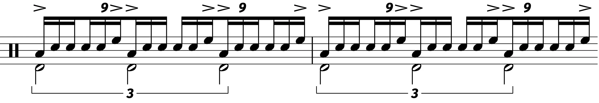I’ve got that down pat, so now I’m working on the hand–to–foot thing using nonuplets. I have to practice all of my hand–to–foot triplets as RLK and KRL since both are valuable depending on what the music is doing around your fill. Here’s a simple check pattern drill:
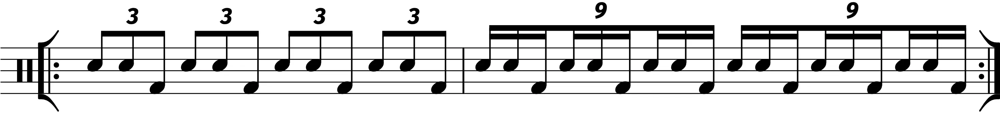 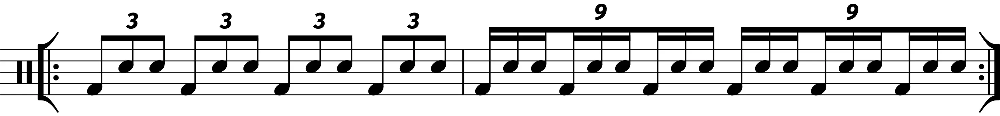The above actually works pretty well for getting your RLK triplets up to speed in general; switching between triplets and nonuplets is much less jarring than switching between 8th and 16th note triplets.
Here’s another drill to check out if you’re having trouble getting the feel of a nonuplet down:
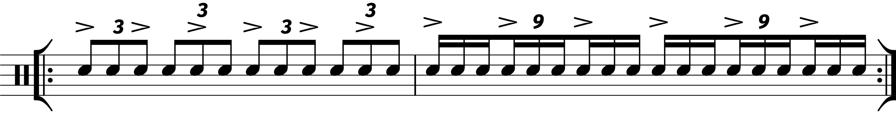Try playing the nonuplets as puh–duh–duhs (RLL) for increased clarity.
Fast Quintuplet Singles
There’s nothing too fancy about this one. I’ve just noticed that most of my “fancy” quintuplet playing is on the slow side. If things are fast, I go for the five–a–diddle (which itself is reminiscent of the paradiddle–diddle).
I’m not very good at rolling around the drums with fast quintuplet singles, so I’ve been revisiting some of my speed exercises with a quintuplet framework. I now realize that there’s a drill that I didn’t think about including:
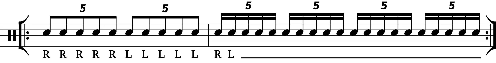This one could work with any subdivision.
4 Note Quintuplets
When I was younger, I remember the world’s lamest “ah–ha!” moments after realizing that I could play quarter note triplets by accenting every other 8th note triplet. I think it took me another year to figure out that I could play whole note triplets by accenting every fourth 8th note triplet.
Playing odd accent groups is always a fun solo motif, but drummers don’t often get the chance to stretch fills out past a single measure. So I’ve been having fun playing a bar of quintuplets, accenting every fourth note to get a little polymeter action going (you could call it a polyrhythm if you wanted to be wrong). Here’re some drills:
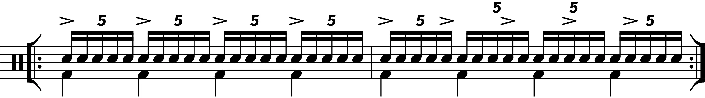 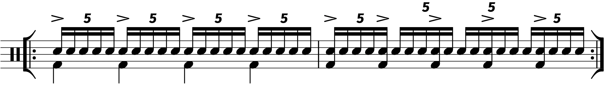4 Note Linear Triplets
This one started with a lick I heard a big band drummer play (I’m not sure where… maybe the memorial concert). It’s this linear 16th note thing played RLLK.
It’s a lot of fun to use in a swinging situation, because the 16th notes swing hard, especially if you really lay into the kick. And for whatever reason, I have a much easier time getting these fast when played as RLLK instead of RLRK (that’s something else to work on, but for another day).
Using 16ths can create a fun solo motif, but naturally, I’ve been trying out this lick with 16th note triplets, partly inspired by the well–known gag of playing triplets with single paradiddles:
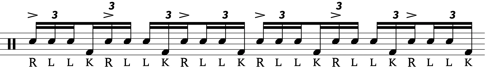Again, note the accent pattern; this time, it lines up with the quarter note triplet.
The kick is in a bit of an awkward spot if you need to crash coming out of this fill. You could reverse the sticking (KLLR), but I discovered a fun twist — using this lick in the middle of a measure, surrounded by 8th note triplets:
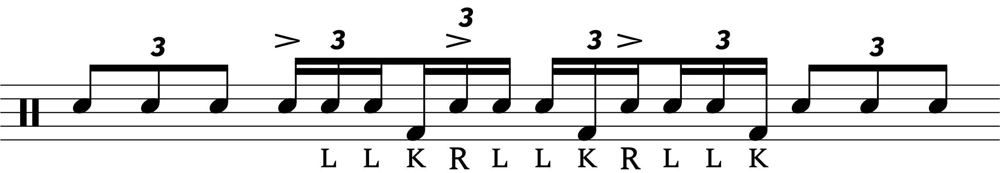Hardcore Flam Fives
It can be tough to make a five stroke roll sound good on the kit. Using triplets often comes off as very square unless the tempo is really cooking. I typically have more fun using 16ths, especially starting on an offbeat in a slow funk context:
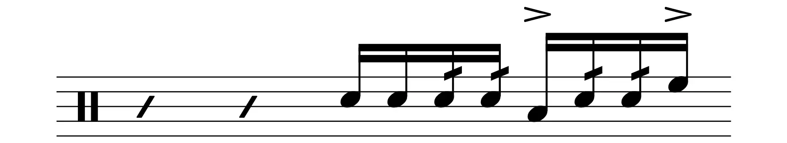Well, there’s a popular hybrid out there called the flam five where you stick a flam at the start of the roll. But there’s something weird about the flam five. Most of the people who play flam fives (mainly drum corps folks) put an accent on the first note. But on the list of 40, the five stroke roll has an accent at the end of the roll (which, funny enough, is how all of the short rolls are written):
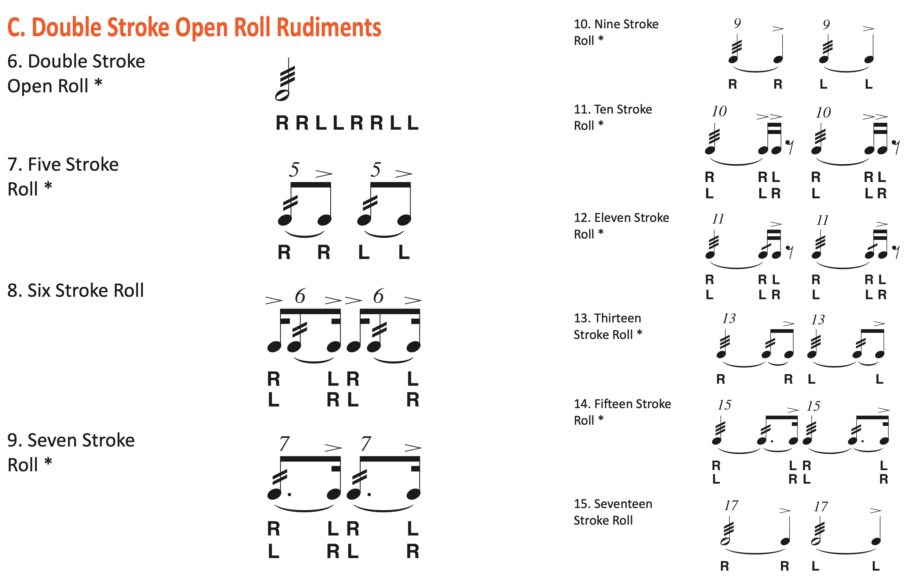I don’t what the deal is here. Maybe it’s another case of drummers not paying any attention to how this stuff is supposed to work (see: all the drummers who say “diddle” when they’re actually talking about drags).
So then, here I introduce my version of the flam five — the “hardcore” flam five, which has the accent (where I think) it belongs:
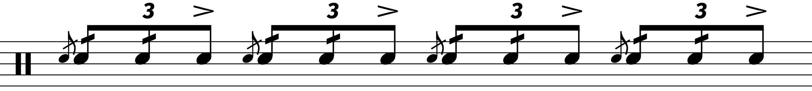I call these “hardcore” because they are much harder to play than the more common interpretation. You can practice a check pattern to get these up to speed, using whatever you want as the check (flammed triplets, vanilla triplets, flam fives with no accents), or perhaps this builder exercise:
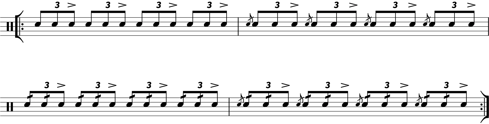Start with a slow tempo. Even slower than you think is slow.
1–3 Double Paradiddle Solo Motif
That just rolls off the tongue, doesn’t it?
If you look at the PAS list of 40, you’ll see that the double paradiddle has only one accent — this is what I call the rudimental version. A while back, I was introduced to a two–accented version, with accents on the first and third notes:
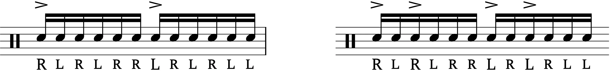I’m not sure what to call these. I used to refer to them as “old school” double paradiddles since I’m assuming there’s an old rudiments manual out there that popularized this interpretation. Then I found out that the real old–school version accents the first four notes.
In GL Stone’s Technique of Percussion (page 151), he brings up the “modern” double paradiddle with two accents, contrasted with the rudimental version with one accent. So there you go. I guess “one three double paradiddles” would be the clearest name.
Anyhoo, after playing around with these, I noticed that they have an interesting lope to them. It then occurred to me that if you shift the notes around to create an inversion, the accents will follow an 8th note triplet shuffle pattern:
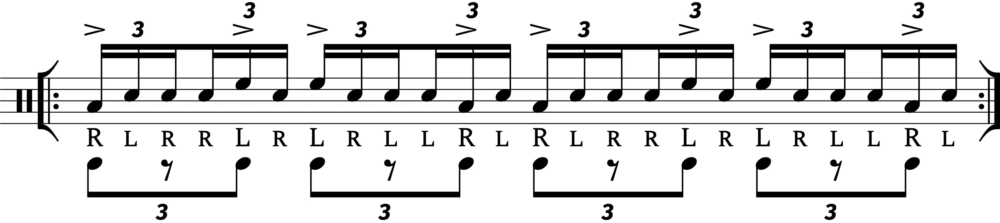Playing accents on the toms, speeding up and slowing down, as well as throwing in other six note licks like the paradiddle–diddle can all work to develop a fun little solo theme.
⁂
That’s all for now. Sorry this is a week late — I realized last minute that I didn’t have a photo ready, and I had to get creative...
Tags: 2022 • Pratice Materials